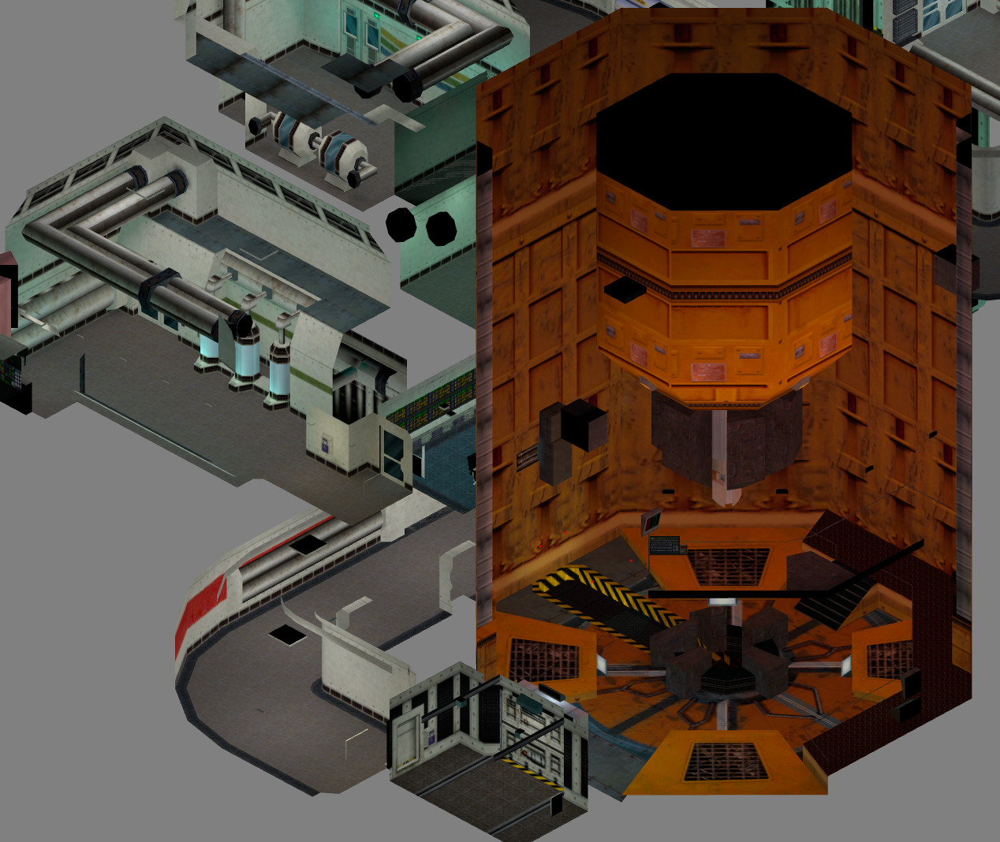
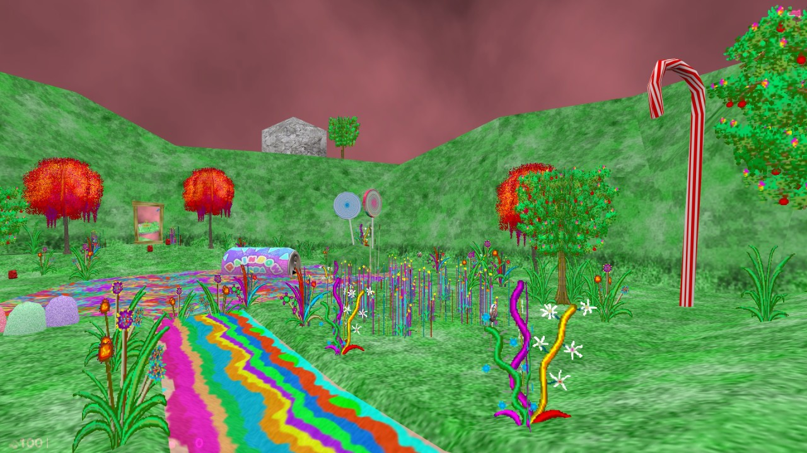
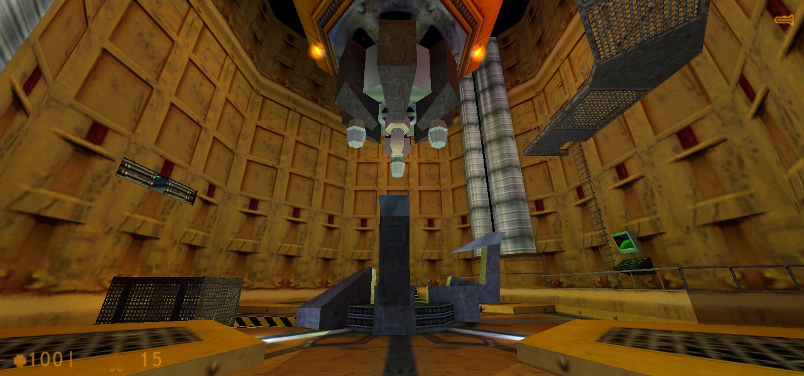
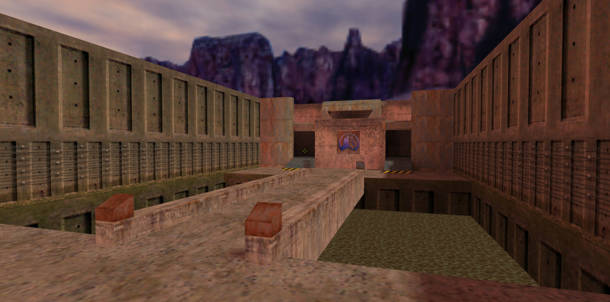
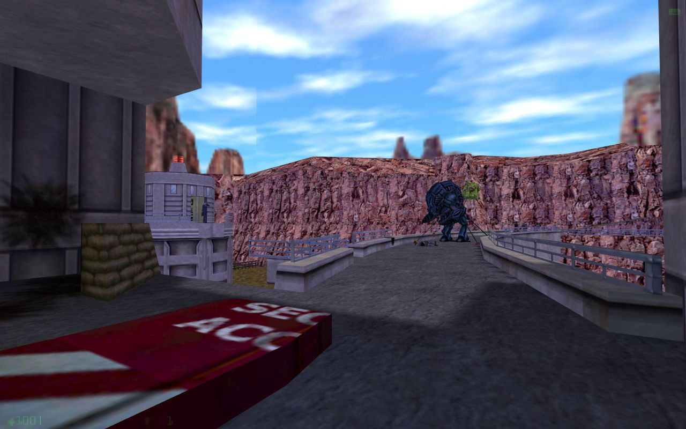

Questionable Ethics from Half-Life by Valve
Isometric view created with HalfMapper, https://github.com/gzalo/HalfMapper
Questionable Ethics from Half-Life by Valve
Isometric view created with HalfMapper, https://github.com/gzalo/HalfMapper
Apprehension from Half-Life by Valve
Isometric view created with HalfMapper, https://github.com/gzalo/HalfMapper
Power Up from Half-Life by Valve
Isometric view created with HalfMapper, https://github.com/gzalo/HalfMapper
Power Up from Half-Life by Valve
Isometric view created with HalfMapper, https://github.com/gzalo/HalfMapper

Blast Pit from Half-Life by Valve
Isometric view created with HalfMapper, https://github.com/gzalo/HalfMapper
Playthrough of Poke646 for the RunThinkShootLive.com Classic of the Month

“We’ve Got Hostiles!” from Half-Life by Valve
Isometric view created with HalfMapper, https://github.com/gzalo/HalfMapper

Office Complex from Half-Life by Valve
Isometric view created with HalfMapper, https://github.com/gzalo/HalfMapper

Anomalous Materials from Half-Life by Valve
Isometric view created with HalfMapper, https://github.com/gzalo/HalfMapper

Anomalous Materials from Half-Life by Valve
Isometric view created with HalfMapper, https://github.com/gzalo/HalfMapper

Anomalous Materials from Half-Life by Valve
Isometric view created with HalfMapper, https://github.com/gzalo/HalfMapper
Gunman Chronicles by Rewolf Software

Big Lolly by Cayle George
Halfquake Amen by muddasheep
http://www.runthinkshootlive.com/posts/half-quake-amen-half-life/

Aurora Effect (upcoming) by MrMazure
Earth’s Special Forces

co_kestrel for Natural Selection by Galen Surlak-Ramsey

hide_n_seek2 for Counter-Strike by Nathaniel Miller
Isometric view created with HalfMapper, https://github.com/gzalo/HalfMapper

de_dust for Counter-Strike by Dave Johnston
Isometric view created with HalfMapper, https://github.com/gzalo/HalfMapper
Project Genesis (unreleased)

Another day in the lab

Poke646 by Marc Schroeder

2fort for Team Fortress Classic by Valve

Canalzone 2 for Team Fortress Classic by Valve
Bayeux for Team Fortress Classic by kes.id

Foxtrot Uniform from Half-Life: Opposing Force by Gearbox

Infested for Sven Coop by Matt McLean
Halfquake Amen by muddasheep
http://www.planetphillip.com/posts/half-quake-amen-half-life/
Casbah for Team Fortress Classic by Dave Johnston and Valve

ns_shiva for Natural Selection by Ryan Moulton


Team Fortress 2: Brotherhood of Arms in 1999.
Valve originally went for a militaristic design, making this version of the game look more like a Counter-Strike with military character models instead of the fun, heavily stylized TF2 of today.
Valve was pushing the GoldSrc engine here with higher-polygon characters and environments, parametric animation and dynamic LOD. All of that was eventually scrapped with the move to the Source engine in the early 2000’s.
There is also some pretty low-fi footage German magazine GameStar shot off a CRT monitor back in 1998, which is the only footage of this version of the game I’m aware of.